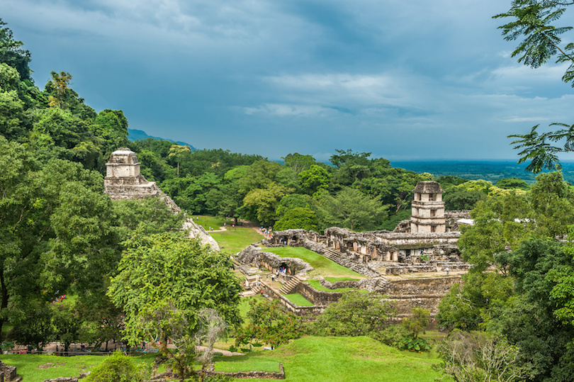

Palenque is an archaeological site that was located on the western edge of the Maya empire in the present-day state of Chiapas, Mexico. Palenque is much smaller than some of its Mayan neighbor cities, but it contains some of the finest architecture and sculptures the Maya ever produced. Most structures in Palenque date from about 600 AD to 800 AD including the Temple of Inscriptions, the only Mesoamerican pyramid built as a funerary monument.